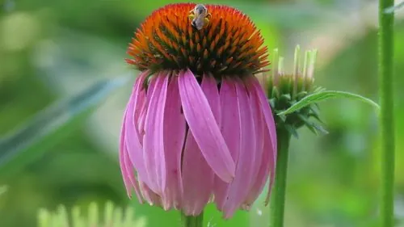

花卉与草本 · 植物界
松果菊 Echinacea purpurea

菊科多年生草本，花心隆起如松果，紫红色舌状花下垂，是花境与药草园的重要植物，原产北美草原，可入药。
- 分类
- 门被子植物门纲木兰纲目菊目科菊科属松果菊属
- 栖息环境
- 北美草原的开阔地，喜光、耐旱、耐寒
- 地理分布
- 原产北美洲，中国各地庭园与药草园引种栽培
- 保护级别
- 暂无评估
物种志
松果菊为菊科松果菊属多年生草本，株高 60–120 厘米，茎直立，全株被粗毛。叶片卵形至披针形，互生。头状花序单生茎顶，直径 8–12 厘米，舌状花紫红色、向下垂，中央管状花橙褐色、隆起呈松果状，花期 6–9 月；果实为瘦果。
松果菊原产北美洲的草原，喜阳光充足、耐旱耐寒和排水良好的环境，适应性强。它花心隆起如松果，因此得名，紫红色舌状花下垂，是花境中独特的花型，也常作切花。松果菊的根和全草是欧美传统的药用植物，被认为有增强免疫力的作用，相关制品广泛用于保健品；栽培以分株和播种为主，花后剪去残花可延长花期。
形态与习性
- 株高60–120 厘米，全株被粗毛
- 花期6–9 月
- 果期花后结瘦果
- 光照喜充足阳光
- 水分耐旱，忌积水
- 土壤疏松、排水良好的壤土
- 繁殖分株、播种
- 主要用途花境、切花、药用
趣味知识
- 松果菊的中央管状花隆起呈松果状，因此得名。
- 紫红色舌状花向下垂，是花境中独特的花型。
- 它的根和全草是欧美传统的药用植物，常用于保健品。
- 松果菊耐旱耐寒，原产北美草原，适应性强。